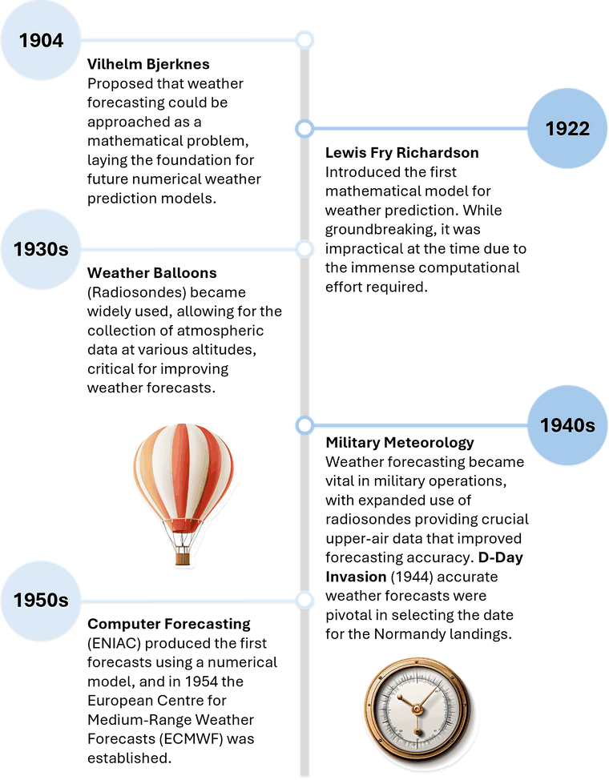
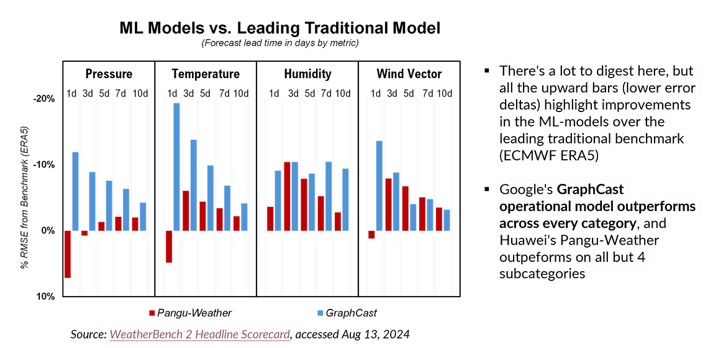

Energy Transition Watch: The Rise of AI Weather Models in Real Estate Strategy
Real-time climate intelligence is no longer a luxury. It’s the new edge in real estate strategy.
In July 2023, northern Italy was battered by a series of extreme weather events, including the most damaging hail event in the country’s history. The resulting €5.5 billion in insured losses caught many investors off guard. For commercial real estate asset managers, it was a costly reminder: in an era of accelerating climate volatility, forecasting failure is portfolio risk.
That event, and many like it, has intensified interest in a new generation of climate intelligence tools powered by artificial intelligence (AI) and machine learning (ML). For CRE investors, these technologies are no longer theoretical, they’re operational.
From Supercomputers to Machine Learning: A New Forecasting Era
For decades, weather forecasting has relied on numerical weather prediction (NWP) models - large-scale physics-based systems that simulate atmospheric dynamics using supercomputers. These models remain essential to national forecasting centres like the ECMWF and NOAA. But they are also slow, computationally demanding, and often challenged by fast-evolving localised events.

In the last two years, AI has begun to challenge the dominance of these traditional models. ML-based systems like Huawei’s Pangu-Weather and Google DeepMind’s GraphCast are now producing forecasts in seconds that rival or exceed the accuracy of legacy systems.
What Makes ML Weather Models Different?
ML models do not simulate physical systems directly. Instead, they are trained on historical climate datasets to learn patterns in atmospheric behaviour. Once trained, they can generate multi-day forecasts in under a minute - orders of magnitude faster than conventional NWP outputs.
This speed is not just technical. It’s strategic.
"[Graph Cast] can predict weather up to 10 days in advance, in less than a minute on a single desktop computer – current systems take hours, on huge supercomputers." - World Economic Forum [1]
For all investors, that time compression translates into earlier alerts, quicker analysis, and more agile responses to climate threat, especially in real asset sectors like real estate.
Benchmarking the Models: Who’s Leading?
In late 2023, Google Research launched WeatherBench 2, a global open-source framework for comparing ML and traditional forecasting models. The results are telling.

This level of accuracy, combined with unprecedented speed, represents a leap forward in how investors can monitor, model, and mitigate climate-related disruption.
Why This Matters for Real Estate Strategy
Commercial real estate faces a rising burden of climate-related operating risk, from flooding and hail to extreme heat and cooling demand volatility. AI-enhanced forecasts support:
- Providing earlier warnings of localized extreme events
- Supporting scenario-based planning for retrofits
- Enabling better tenant communication during disruptions
- Improving insurance outcomes through proactive risk mitigation
Critically, ML models do not replace traditional meteorology. They enhance it. Many are now being used in hybrid applications, combining physics-based forecasting with pattern-driven ML inference for improved precision.
Broader Climate Planning: The Grid and Beyond
Forecasting isn’t just about acute weather. It's also essential to long-term planning for energy and infrastructure. One of the most ambitious applications is Europe’s Destination Earth digital twin initiative, where the German Aerospace Centre, in collaboration with ECMWF, is using advanced climate simulations to improve renewable energy grid planning.
These hybrid tools are helping national energy systems plan for seasonal wind variability, cloud cover, and heatwaves, all of which affect the real estate sector's operational carbon profile and future energy costs.
From Forecasting to Forward-Looking Investment
For CRE investors, this is about more than early warnings. It’s about building a climate-smart investment process that blends traditional ESG frameworks with data-led, real-time decision support. The next decade of outperformance may be less about risk avoidance and more about intelligence allocation.
The models are here. The data is flowing. And the competitive advantage belongs to those who are listening, before the storm arrives.
[1] World Economic Forum - Emerging Technologies, "AI can now outperform conventional weather forecasting – in under a minute, too". Dec 2023.